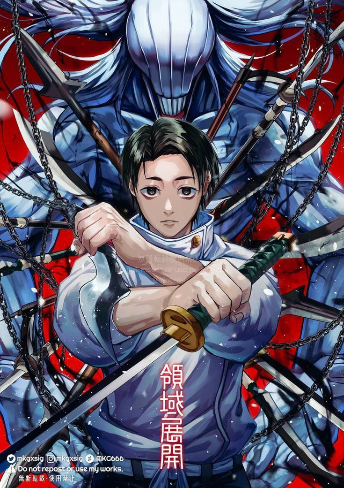

-
3000
Descrição:
Yuuji Itadori é um jovem incrivelmente forte, de coração bondoso e determinação inabalável. Após engolir um dedo amaldiçoado de Ryomen Sukuna, tornou-se um receptáculo para o Rei das Maldições. Apesar disso, Yuuji busca salvar vidas enquanto luta para manter Sukuna sob controle. Sua força física e energia amaldiçoada emergente fazem dele um feiticeiro poderoso e imprevisível no campo de batalha.Habilidades:
Força Sobre-Humana: Aumenta ATK em +500 pontos ao atacar diretamente.
Controle Parcial de Sukuna: Ganha um ataque adicional por turno, mas perde 200 pontos de HP.
Troca de Controle: Chance de ativar Sukuna, causando 1000 de dano a todas as cartas no campo.FeiticeiroItadoriATK/ 2800 DEF/ 2500 -
4000
Descrição:
Ryomen Sukuna, também conhecido como o Rei das Maldições, é uma entidade demoníaca incrivelmente poderosa, temida por todos. Apesar de estar preso no corpo de Yuuji Itadori, sua força e inteligência são imensuráveis. Sukuna é cruel, sádico e está sempre em busca de oportunidades para se libertar e reinar sobre o mundo das maldições. Suas habilidades amaldiçoadas fazem dele uma ameaça mortal.Habilidades:
Rei das Maldições: Aumenta o ATK em 1000 pontos quando está no controle de Yuuji.
Destruição Imparável: Causa 1000 de dano a uma carta inimiga ao atacar diretamente.
Sangue Amaldiçoado: Sacrifica 500 pontos de HP para invocar uma carta amaldiçoada adicional no campo.AmaldiçoadoSukunaATK/ 3500 DEF/ 3000 -
2800
Descrição:
Megumi Fushiguro é um dos estudantes da Escola de Feitiçaria de Jujutsu e tem uma personalidade séria e focada. Ele é descendente do clã Zenin, mas é mais reservado sobre seu passado. Megumi é habilidoso no uso de técnicas de invocação, utilizando o poder das sombras para invocar Shikigami. Sua habilidade estratégica e seu forte senso de justiça fazem dele um aliado valioso no combate às maldições.Habilidades:
Invocação de Shikigami: Invoca uma criatura para ajudar a atacar, causando 1500 de dano ao inimigo.
Técnica de Sombras: Aumenta DEF em 1000 pontos ao proteger uma carta aliada.
Amplificação de Força: Aumenta o ATK em +300 pontos quando em campo por mais de 2 turnos.FeiticeiroMegumi FushiguroATK/ 2200 DEF/ 2800 -
5000
.jpg)
Descrição:
Satoru Gojo é o feiticeiro mais forte da atualidade e um dos personagens mais poderosos do universo de Jujutsu Kaisen. Com sua técnica "Limite Infinito" e seu domínio sobre a energia amaldiçoada, Gojo pode manipular o espaço e o tempo de formas quase ilimitadas. Seu poder é imenso e ele é um dos poucos capazes de desafiar as forças mais poderosas das maldições.Habilidades:
Limite Infinito: Reduz o ATK de uma carta inimiga para 0 por um turno.
O Olho Infinito: Aumenta a DEF de todas as cartas aliadas em +500 pontos por turno.
Domínio Completo: Ganha um ataque adicional com dano de 1500 pontos após dois turnos em campo.FeiticeiroSatoru GojoATK/ 4000 DEF/ 3500 -
2500
Descrição:
Nobara Kugisaki é uma estudante de Jujutsu que, apesar de sua aparência descontraída, é uma combatente feroz. Ela usa uma técnica amaldiçoada única que envolve o uso de um martelo e pregos para destruir suas vítimas, com grande habilidade e precisão. Nobara é confiante, determinada e tem uma personalidade forte, o que a torna uma aliada formidável no combate às maldições.Habilidades:
Técnica do Martelo de Ferro: Causa 1000 de dano a uma carta inimiga e reduz a DEF do inimigo em 500 pontos por 2 turnos.
Vingança Imparável: Aumenta o ATK em +400 pontos após derrotar uma carta inimiga.
Resistência Amaldiçoada: Recupera 200 pontos de HP ao usar uma habilidade.FeiticeiraNobara KugisakiATK/ 2400 DEF/ 2200 -
3000
Descrição:
Mahito é uma Maldição cruel e imprevisível, com a habilidade de manipular almas para alterar as formas físicas e mentais de seus alvos. Ele representa a encarnação das emoções negativas humanas, e sua técnica "Manipulação da Alma" o torna uma ameaça tanto para feiticeiros quanto para outras maldições.Habilidades:
Toque Mortal: Elimina instantaneamente cartas de baixo nível no campo inimigo.
Galeria de Cristais: Reduz o ATK de todas as cartas inimigas em 50% por dois turnos.
Regeneração de Alma: Recupera 500 pontos de vida após causar dano ao oponente.MaldiçãoMahitoATK/ 2600 DEF/ 2400 -
4500
Descrição:
Yuta Okkotsu é um dos feiticeiros mais poderosos, reconhecido por sua habilidade de invocar a Rainha das Maldições, Rika Orimoto. Seu domínio sobre energia amaldiçoada, combinado com seu vínculo emocional com Rika, o torna uma força quase imparável no mundo do Jujutsu.Habilidades:
Rika: Rainha das Maldições: Invoca Rika no campo, aumentando o ATK em +2000 por dois turnos.
Canalização de Energia: Recupera 1500 pontos de vida após derrotar uma carta inimiga.
Técnica Suprema: Causa 2500 de dano direto ao oponente quando ativada.FeiticeiroYuta OkkotsuATK/ 3700 DEF/ 3200 -
4200

Descrição:
Kenjaku é uma entidade antiga e astuta que usa sua técnica de Transferência de Cérebro para implantar sua consciência em diferentes corpos. Ele manipula eventos e feiticeiros ao longo dos séculos, sendo uma ameaça imensa devido ao seu conhecimento e habilidades.Habilidades:
Transferência de Cérebro: Permite assumir o controle de uma carta inimiga por dois turnos.
Manipulação Estratégica: Reduz o ATK e DEF de todas as cartas inimigas em 1000 pontos por turno.
Despertar Amaldiçoado: Causa 3000 de dano direto ao oponente ao custo de 1500 pontos de vida.Feiticeiro/MaldiçãoKenjakuATK/ 3600 DEF/ 3000 -
3500
Descrição:
Choso é um híbrido amaldiçoado-humano e um dos nove Pintores da Morte. Com um vínculo fraternal inabalável, ele luta com todas as forças para proteger seus irmãos. Sua Técnica de Manipulação de Sangue o torna um oponente versátil e imprevisível no campo de batalha.Habilidades:
Flecha de Sangue: Causa 1500 de dano direto ao oponente ao custo de 500 pontos de vida.
Explosão Sanguínea: Causa 1000 de dano a todas as cartas inimigas em campo.
Defesa de Sangue Coagulado: Aumenta a DEF em +1000 pontos por dois turnos ao ativar.Feiticeiro AmaldiçoadoChosoATK/ 2800 DEF/ 2500